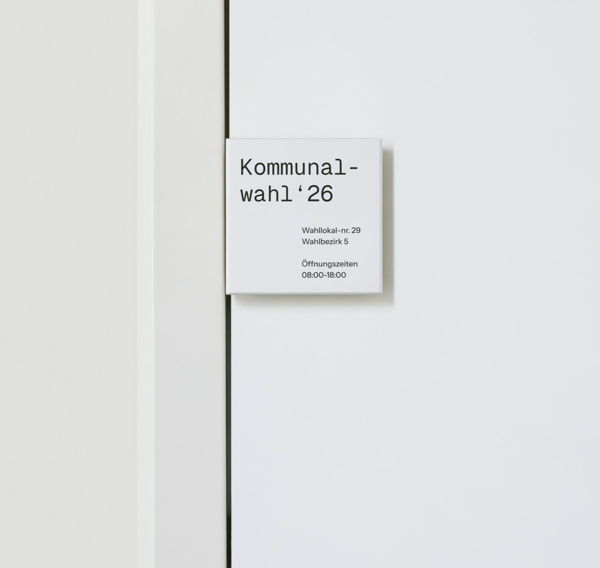
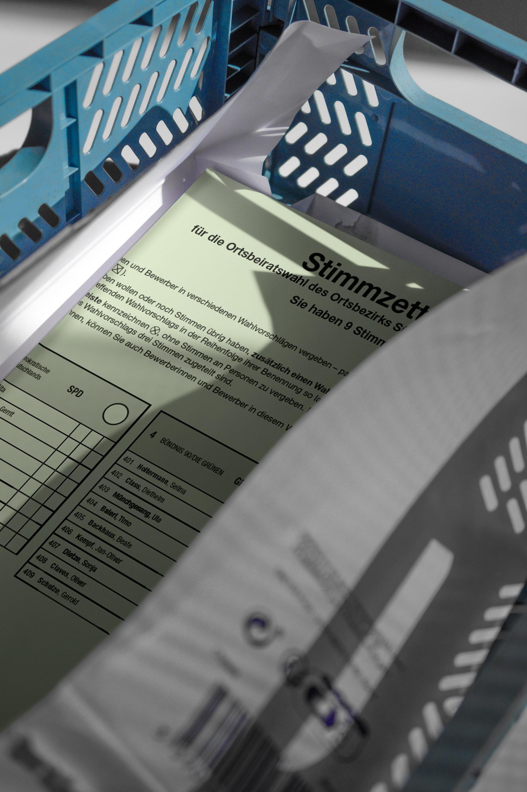
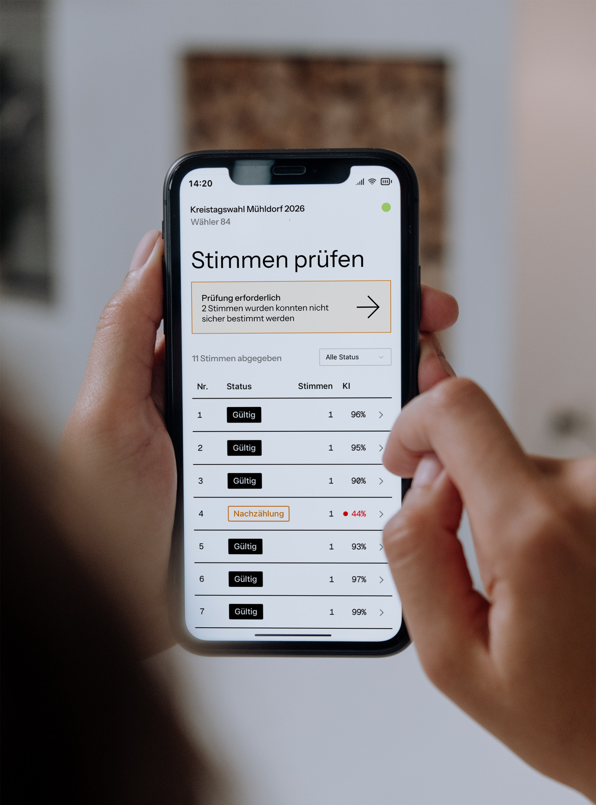

Voteasy is a mobile-first concept for AI-assisted vote counting on election night, designed to work within Germany's existing paper ballot system.

At a local election in 2025, I worked as a volunteer poll worker and experienced the newly introduced digital counting system firsthand. It had serious usability issues throughout: unclear terminology, buried actions, and a flow that made entering data slower than pen and paper. For a tool used once a year with no training, that is not acceptable.

I spoke with fellow poll workers to check whether my experience was shared. It was. Recurring themes: unfamiliar terminology, no clear flow, and a system that assumed expert knowledge. The core insight: this tool is used once a year, under time pressure, by volunteers with no prior training. It has to work immediately.
A fully digital election would make this unnecessary. But in Germany, paper ballots remain a deliberate choice to include voters who cannot or should not have to interact with digital systems. Voteasy Votecounter works within that reality: it digitises the counting process behind the scenes, leaving the voter experience completely unchanged.

The concept connects three roles: poll worker at the entrance, vote counter at the table, and municipal administration. Each sees only what they need. Access works via QR code, no login or training required. AI reads the ballot photo and suggests a result; the human confirms or corrects. All labels use the terminology poll workers already know.
Voteasy Votecounter is a concept and prototype developed independently after experiencing the problem directly. Fellow poll workers who reviewed it responded immediately: clear, fast, and something they would use that same night. The next step is pitching the concept to the responsible municipal office.

Langenscheidt Language Coach

ELLA – Lifelong Learning with AI

HMI for Driving Simulation